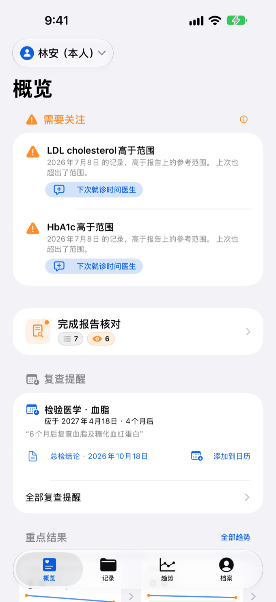
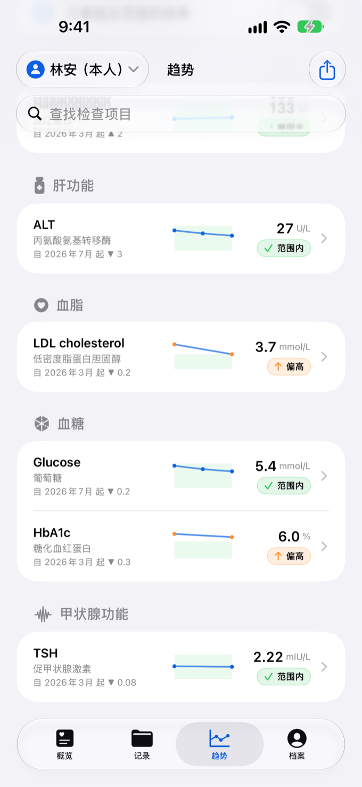

报告与体检整理
纸质报告拍进来，结构化档案整理好。
支持相机扫描、照片选取或导入 PDF 文件。多页综合体检报告会自动按科室归类，纸质心电图保留高清原图以便缩放查看；需要确认的条目会清楚标注，方便你保存前对照原图核对。

把散落的纸质化验单、体检报告、影像说明与心电图，整理成清晰可查的家庭档案——安心保存在你的设备上。

Med-X 概览页：近期关键指标、用药提醒与 Apple 健康汇总
无需注册账号，家人的健康档案始终留在你的 iPhone 或 iPad 上。
支持相机、照片与 PDF 导入，识别结果可对照原图清晰核对。
自动统一不同医院的常用单位，在一张图表里看清长期变化。
带着一页「给医生」参考摘要走进诊室，沟通更高效从容。
围绕真实纸质报告、跨院复查与诊室沟通打磨每一处细节。
支持相机扫描、照片选取或导入 PDF 文件。多页综合体检报告会自动按科室归类，纸质心电图保留高清原图以便缩放查看；需要确认的条目会清楚标注，方便你保存前对照原图核对。
不同医院的检验单位自动换算为你习惯的单位，并在曲线后方保留每份报告自身的参考范围。结论里提到的复查周期也能一键加入日历提醒。

按步骤梳理本次症状与想问医生的问题，自动生成符合医生阅读习惯的一页摘要——包含过敏警示、当前用药、近期异常变化与报告结论，支持全屏展示或分享打印。

为自己、父母或孩子建立相互独立的档案空间。记录在用药物并提示重复成分，管理全家疫苗接种记录，把过敏史与重要安全信息放在随时可见的位置。
融入你熟悉的系统能力，同时始终守护健康记录的私密性。
Med-X 可离线运行于你的设备，无需注册账号，不上传云端，也没有任何广告或行为追踪。
浏览分步使用说明，或随时发邮件与我们交流建议与问题。